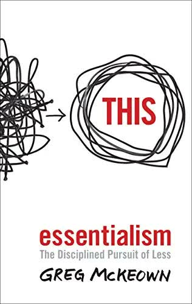

Essentialism by Greg McKeown

Recently, I read an interesting book by British-American productivity expert Greg McKeown called Essentialism. I want to share with you McKeown’s key ideas, which can help you move from procrastination to productive work.
Main idea:
Focus on the main goal, eliminate everything unnecessary, and make work easy.
McKeown believes that in order to achieve goals and feel satisfied, people should focus on one specific goal and avoid wasting time on anything that is not connected to it.
Besides this, Greg emphasizes making work easy so that you do not give up after a few days. For example, if you want to start learning English, spend 15 minutes on it every day. At the stage of building a habit, consistency is more important than immediate success. If you study for 3 hours a day, you will simply burn out. It is the same as with your grand plans after New Year’s:
“I will start exercising for an hour a day, meditate, learn Spanish, and so on.”
But after just two weeks, you are barely doing even one of these things.
The “minimum-maximum” principle
Greg recommends setting a certain minimum and maximum for your daily goals. For example, instead of doing yoga for 40 minutes a day, set a range from 15 to 30 minutes. This way, it will be much easier to complete the goal, and this is critically important for forming a habit. The main thing is to do it every day and avoid zero days.
It is important to ask yourself three main questions:
1. What is happening?
2. What follows from this?
3. What should I do now?
Otherwise, it is quite easy to lose your way. And this happens to everyone. We usually have this kind of mental check-in once a year: around New Year’s. That is why many people do not really know what they are doing or why they are doing it. They set grand goals that they will not achieve, and then quickly give up.
You need intermediate goals — progress trackers that remind you that your effort is not wasted. Even if you cannot turn on a movie in English and understand everything, there is nothing wrong with that, because you have learned 100 words, 10 of which appeared in the movie, and you understood them!
That is progress!
Conversation with yourself
In order not to discover five years later that you were walking down the wrong road, you need to pause once every 90 days. During this personal “meeting,” you should answer three questions: What unimportant thing am I investing too much in? What important thing am I investing too little effort in? And how can I make the transition to a better distribution of my energy as easy as possible over the next three months?
We all lose our way, but those who admit it faster win.
Look at it from a different perspective In addition, if you feel emotionally drained, which may be caused by a number of reasons, simply take a piece of paper and start writing down everything that worries you: problems, failures, stress — and after you have written it all down, throw the paper away. When you write down your thoughts, your brain enters the state of an “observer” and can look at everything that is happening from a different angle. Moreover, these notes will help you clearly see which problems need to be solved, and you will be able to start working on solving them.
The 1-2-3 system
Every morning, write down your goals for the day, including:
1 most important task
2 important and urgent tasks
3 routine tasks
After completing all 6, you will officially be done for the day and will be able to rest without feeling guilty.